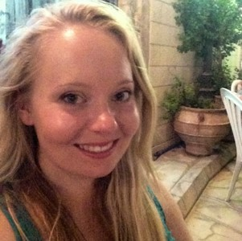
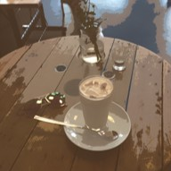

 My name is Naomi and I am a postgraduate student at the University of Glasgow within the Institute of Neuroscience and Psychology. I’m currently working towards my Masters in Research Methods of Psychological Science with Prof. Lawrence Barsalou on the effects of mindfulness on habitual behaviour change.
I am a member of the British Psychological Society.
Having recently graduated from the University of Glasgow in 2017 with a First in BSc Psychology, I work with Prof. Barsalou on extending my dissertation project on the role of factors within and beyond self-control on influencing habitual behaviours, alongside undertaking my Masters.
I have additionally worked internationally, undertaking a research assistantship during the summer of 2016 at the University of Tübingen, Germany in partnership with the Institut für Wissensmedien, assisting Dr. Hauke Meyerhoff on investigations into cognitive learning strategies.
Due to my eclectic background, I have a broad range of research interests, and consequentially consider myself able to provide assistance and a strong work-ethic towards various projects. My current work focuses on habitual behaviours and their interventions, as well as the effects of mindfulness and meditation on both behavioural and psychological experience.
I completed my BSc Hons Psychology at the University of Glasgow in 2017 and achieved a First. Throughout my undergraduate degree, I developed a broad scope of knowledge for psychology as well as detailed understanding in areas of ageing, atypical development, social cognition and positive psychology. In recognition for my efforts not only in Psychology, but across all my additional courses, I received awards and prizes, including bursaries from the School of Modern Languages and Cultures and the School of Physics and Astronomy.
Returning to Glasgow as a postgraduate, the Masters in Research Methods of Psychological Science is challenging me to become a better researcher, allowing me to develop fluency with R coding, as well as knowledge of various research methods, both cognitive and qualitative focused, and brain imaging techniques. Having being interested in mindfulness through both personal experience and my undergraduate course, I am thoroughly enthusiastic about running my own Masters project.
I am a keen international solo traveller. I find languages fascinating and love to explore different cultures (which appeals to my inner ethnographer! Scandal!).
My interests fuel my travels; my fascination with the German language has led me on many occasions to Germany, inter-railing and volunteering, and my interest in mindfulness steered me into studying meditation at a Buddhist monastery in England.
 Please feel free to get in touch…
email TBC
twitter TBC